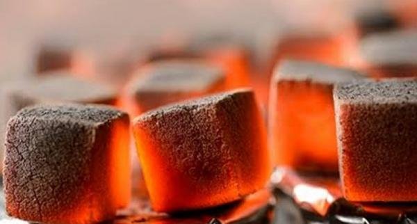
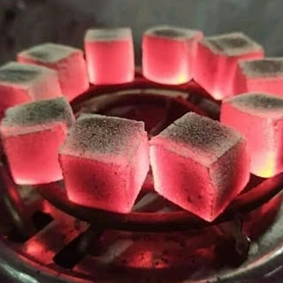

CARA MEMBUAT BRIKET KELAPA

BRIKET merupakan alternatif bahan bakar berupa blok dengan bahan yang mudah dibakar.
Bahan bakar alternatif ini dibuat dari hasil pembakaran bahan yang berukuran kecil. Briket yang umum dijumpai adalah terbuat dari arang.
Cara membuat briket arang ini cukup mudah dan dalam pembuatannya bisa memanfaatkan bahan-bahan yang ada di sekitar kita.

bahan bahan dan alat yang akan digunakan
- BAHAN BAHAN
- batok kelapa
- tepung kanji
- bonggol jagung
- serbuk kayu
- korek api
- kayu bakar
- ALAT ALAT
- Kaleng bekas biskuit atau wadah tertutup lainnya dari kaleng
- blender/lupang&alu
- sekop
- cetakan
- gelas ukur
- toples untuk menampung serbuk
- saringan
- palu/alat berat
CARA MEMBUAT
- Jemur bonggol jagung dan batok kelapa yang telah dibersihkan hingga kering.
- Hancurkan bonggol jagung dan batok kelapa yang telah kering hingga menjadi bagian kecil, tidak perlu sampai hancur. Gunanya agar lebih mudah di bakar.
- Bakar bonggol jagung, batok kelapa, dan serbuk kayu didalam kaleng wadah yang sudah disediakan hingga menjadi arang.
- Kemudian tumbuk masing-masing bahan dan ditampung menggunakan wadah yang berbeda. Agar memudahkan dalam membuat takaran atau perbandingan
- Lalu pisahkan antara bubuk halus dan kasar menggunakan saringan halus.
- Untuk bahan perekat kita siapkan tepung kanji yang dicampur menggunakan air.
- Untuk bahan perekat kita siapkan tepung kanji yang dicampur menggunakan air.
- Agar menyatu dengan baik, panaskan tepung kanji yang sudah ditambah air dengan api sedang.
- Jika tepung kanji sudah mengental, siap dicampurkan dengan bubuk arang yang telah disaring.
- Kemudian masukan kedalam cetakan yang dikehendaki sambil ditekan atau dipres, agar briket menjadi padat.
- kemudian jemur briket yeng telah di cetak
Berdasarkan hasil pengujian, komposisi terbaik untuk briket arang dengan perbandingan masing-masing antara batok kelapa, bonggol jagung dan serbuk gergaji adalah 70 : 30 : 10.***